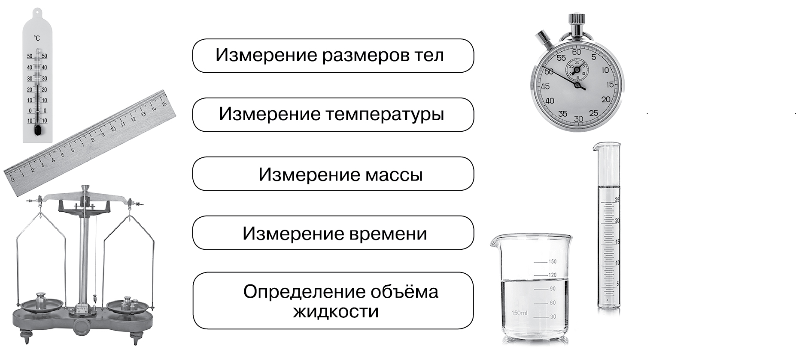
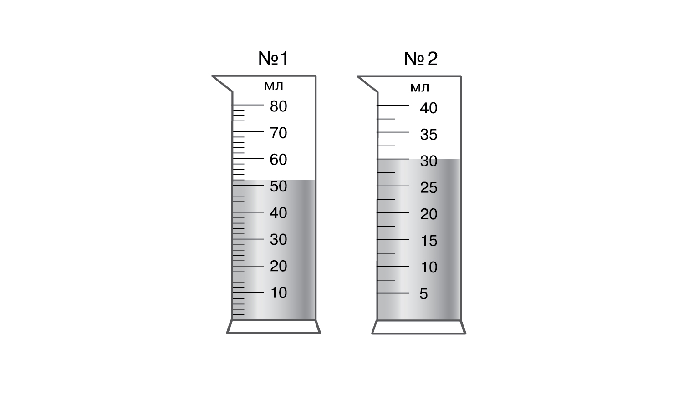
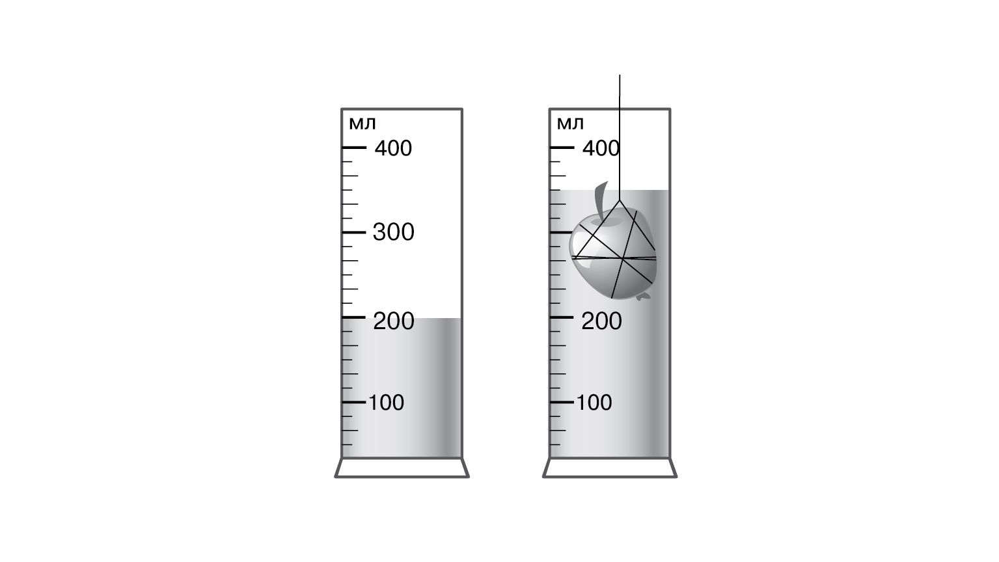

> Введите ваши данные для доступа к терминалу:
БИОЛОГИЧЕСКИЙ МОДУЛЬ: ИЗМЕРЕНИЯ В ИССЛЕДОВАНИЯХ
— определение числового значения определённой величины объекта или явления.
— величина, соответствующая расстоянию между двумя соседними штрихами шкалы измерительного прибора.
— это наибольшая величина, которая может быть измерена с помощью данного измерительного прибора.
Какой метод биологии основан на определении числового значения величины объекта или явления?
Какие единицы измерения могут быть использованы при измерении роста, длины и расстояния?
При измерении роста, длины и расстояния можно использовать следующие единицы измерения:
Какое оборудование НЕ используют при измерении объёма?
Определи с помощью какого лабораторного оборудования, изображённого на рисунке, измеряют температуру?

Определи с помощью какого лабораторного оборудования, изображённого на рисунке, измеряют объём?
Определи с помощью какого лабораторного оборудования, изображённого на рисунке, можно измерить массу семян пшеницы?
Какой объём содержат мерные цилиндры №1 и №2?

Определи по рисунку объём яблока, если изначально в мерном стакане было воды 200 мл.

Как называется лабораторная посуда, которая изображена на рисунке?